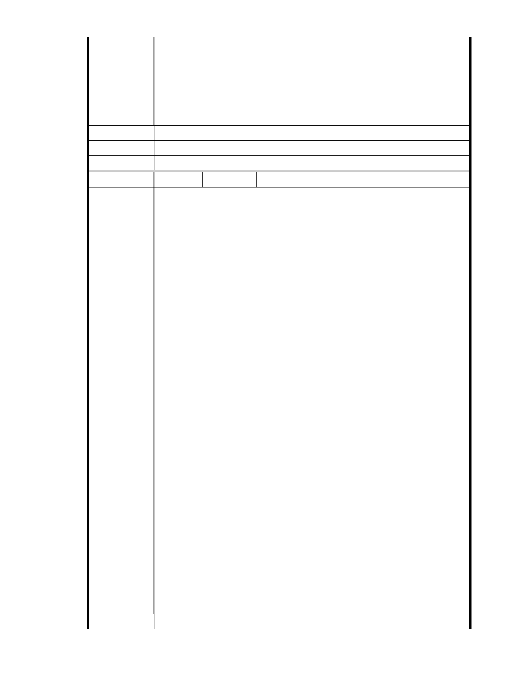

這個變更案完全是一種大集團霸道行為，居民必須不斷忍受這種霸道並
犧牲日常生活作息來爭取自身居家環境安全保障。在行政院院長都公開
喊話說要廣建滯洪池的現在，難道市長還是認為恢復此地原有滯洪量不
重要嗎??
郝市長，請停止慈濟變更內湖保護區案的審查!
建議辦法
市 府 說 明 相關陳情意見將納入本案審查人民意見，依法定程序辦理。
委 員 會 決 議 同編號 1。
編
號 273
陳情人 MA201312050356 簡嘉瑋
市長，您好：
我反對慈濟基金會變更內湖區大湖公園側保護區為社會福利園區。
相信市長對"看見台灣"這部電影並不陌生。同樣的觀點,內湖區需要的是
能讓大地生養休息的保護區,而不是慈濟所謂的一堆水泥建物的"社會福
利園區"。 而且我深信在市長您的主政下的台北市,社會福利水準均為其
他縣市之冠,實不需要再建設所謂的社會福利園區。
今年 11 月 23 日各大報大幅度報導：【行政院長江宜樺 22 日去視察高雄、
屏東的防洪治水工程，對高雄市三民區寶業里滯洪池發揮效益，表示肯
定，指先前 8 年 800 億治水預算展現實際成效，未來 6 年 600 億治水預算
將廣設滯洪池，讓城市本身就有蓄洪能力。並說，行政院 6 年 600 億治
水預算將沿用此經驗，將在都會區廣設滯洪池，打造「海綿城市」概念，
陳 情 理 由 讓城市自己有蓄洪能力，而不只是加高堤防、擴建下水道。】
城市是需要空間納洪才能永保安康的，而慈濟申請變更的保護區所在地
原本就是自然產生的谷地集水滯洪區域，此地現今成為平地的面貌，全
然是因為北市府對違法企業消極管理所致，而今慈濟順勢向政府申請變
更保護區的行為，十多年來居民不堪其擾，每遇專案小組會議、都委會
大會，大家就要放下手邊工作來會議場上跟開發業者慈濟基金會對抗。
這個變更案完全是一種大集團霸道行為，居民必須不斷忍受這種霸道並
犧牲日常生活作息來爭取自身居家環境安全保障。在行政院院長都公開
喊話說要廣建滯洪池的現在，難道市長還是認為恢復此地原有滯洪量不
重要嗎??
郝市長，請停止慈濟變更內湖保護區案的審查!
建議辦法
- 317 -